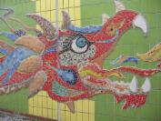
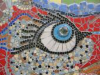
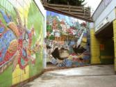

Mammad Oghatian, Kursleiter des Kulturhauses, arbeitet im Stadtteil in Kinder- und Jugendhilfeeinrichtungen und an der Gesamtschule Süderelbe. Wann immer wir zusätzliche Mittel für Projekte einwerben können, entstehen z.T. große Objekte, vom Künstler entworfen, nach seiner Anweisung mit Kindern und Jugendlichen in die Tat umgesetzt.